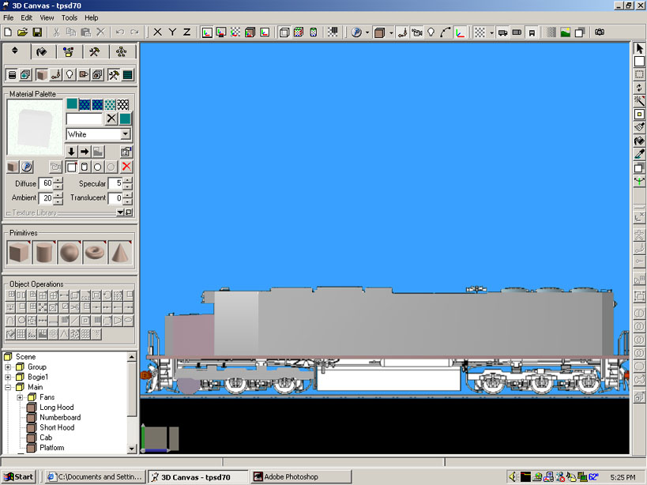
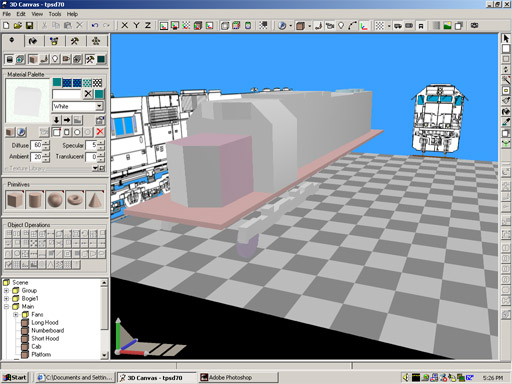

Background Images as Reference Source for 3D Canvas Pro
by Trouble Pryor
Question
Question: I was wondering if 3DC has the ability to load in a background for use as a reference?

|

|
Question: I was wondering if 3DC has the ability to load in a background for use as a reference?
Yes, you absolutely can load in background images as reference. If you've seen any 3DCanvas screenshots, you've probably seen that the design area looks like it has a floor and two walls, in a gray and white checkerboard pattern. You can replace this pattern with an image.
What I have done is I have a side and front view of the IC SD70 set as a backdrop on the two walls. Then, I use 3DC's orthographic views to make sure everything matches up exactly to the proportions of the diagram. This way, the technique you can use is to design model to the correct proportions based on the diagram, and then scale the whole thing to the proper dimensions.
I've replaced the two side "walls" with the front and side diagrams:

Side orthographic view (below): The orthographic views do away with distance-related distortion, so you can get a good idea of how your parts are really placed and what they look like in relation to each other:

This is a perspective view (below): You can move freely around or through your model easily in all three dimensions in this view, and objects are rendered in the normal perspective (objects further from the "camera" appear smaller, etc.):

The bitmaps I used are 755 x 755. It works best if your images are square, to start with, so nothing is stretched funny. So, make your square picture, and then copy the diagram to a suitable place in the square (my diagrams are at the bottom of the square). The background picture will always fill the whole wall, it's just how you arrange the picture that determines where things appear.
Also, 3DCanvas' extrude tool allows you to use a diagram as a backdrop, trace the object with points, and extrude the outline to make a solid object.
3D Canvas also supports patch modeling, which allows you to precisely construct complex curved surfaces (such as the bullet nose on a high speed train!) that would be very difficult to get right with any other method.
Amabilis has a tutorial on their website that teaches you how to build a 3D dinosaur head based on a 2D profile drawing. The dinosaur happens to be used as an example because 3DC isn't just for MSTS, but the technique is equally relevant for the precise modeling of curvy locomotive shapes.
You can check the size accuracy by dragging a primitive cube out to the exact length your locomotive should be, and in an orthograpic view checking that cube against the background drawing.
This is just another method for doing it and it's one that I personally find produces very accurate size results.
Hope That Helps!!